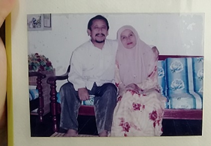
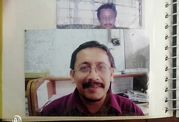
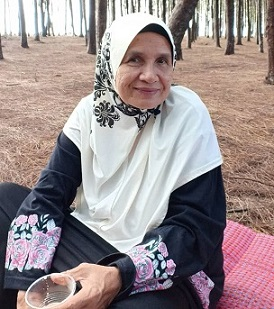
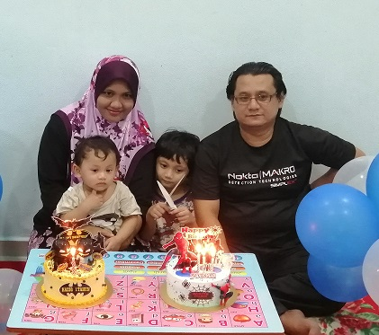
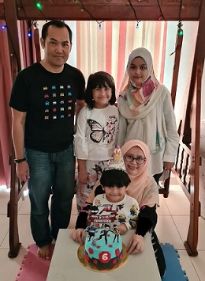
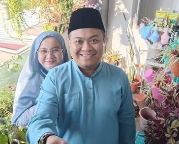
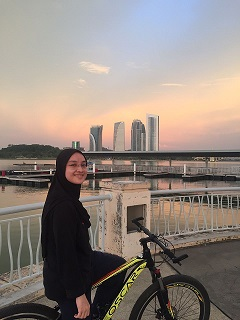
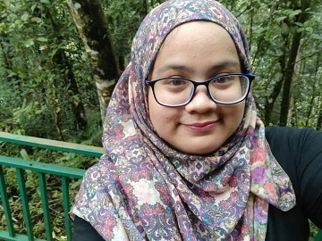

| Pictures & Descriptions |
|  |
This is my mum and dad.
My dad was born on 22 March 1958.
My mum was born on 5 September 1960.
They married on 19 March 1981
and are blessed with 7 childrens. |
|  |
My dad name is Wan Samsudin bin Wan Ahmed,
he was a teacher at Secondary school.
He passed away in 2007 when I was 10 years old.
My beloved Dad, forever in loving memory of us.
Please recite Al- Fatihah for him.
Thank you.
بِسۡمِ ٱللَّهِ ٱلرَّحۡمَٰنِ ٱلرَّحِيمِ .1
ٱلۡحَمۡدُ لِلَّهِ رَبِّ ٱلۡعَٰلَمِينَ .2
ٱلرَّحۡمَٰنِ ٱلرَّحِيمِ .3
مَٰلِكِ يَوۡمِ ٱلدِّينِ .4
إِيَّاكَ نَعۡبُدُ وَإِيَّاكَ نَسۡتَعِينُ .5
ٱهۡدِنَا ٱلصِّرَٰطَ ٱلۡمُسۡتَقِيمَ .6
صِرَٰطَ ٱلَّذِينَ أَنۡعَمۡتَ عَلَيۡهِمۡ غَيۡرِ ٱلۡمَغۡضُوبِ عَلَيۡهِمۡ وَلَا ٱلضَّآلِّينَ .7
|
|  |
This is my beautiful and lovely mother.
My mother name is Rahimah binti Mat Salleh.
After my father passed away,
she is the one taking care, protecting, raising,
and supporting us by herself.
Thank you my mother
for being such a strong lady for us.
|
|  |
This is my big brother and the eldest sibling of mine.
His name is Wan Muhd Fakhrurozi bin Wan Samsudin.
He works with
Ministry of Domestic Trade and Consumer Affairs,
Kelantan.
He married with Siti Hazar binti Mohamed Sedik.
an assistant of students administration.
Together, they have two sweet boys,
Wan Muhammad Harith and Wan Muhammad Haziq.
|
|  |
This is my sister and the second eldest.
Her name is Wan Nurul Hidayah binti Wan Samsudin.
Currently, she is furthering her
PhD study at University Utara Malaysia.
She married to Mohd Kamil bin Mohd Noor,
a Administrative and diplomatic Officer (PTD)
of Ministry of Education.
Together, they have three sweet children.
Damia Balqis, Maryam Jameela, and Muhammad Al-Fateh.
|
|  |
Starting from behind is....
My sister and the third eldest of my siblings.
Her name is Wan Nurul Firdaus binti Wan Samsudin.
She is teacher at Sekolah Kebangsaan Methodist ACS.
She married to Nik Mohd Khairul Hisyam bin Kamaruzaman.
He works as nurse at Hospital Raja Permaisuri Bainun.
|
|
This is my brother.
He is the fourth eldest of my siblings.
His name is Wan Abdul Muadz Adzim bin Wan Samsudin.
He works as software engineer at Cyberjaya.
|
|  |
This is my sister.
She is the fifth eldest in my siblings.
Her name is Wan Siti Auni binti Wan Samsudin.
She works as Administrative and diplomatic Officer (PTD)
at Putrajaya.
|
|  |
This is my sister.
She is the sixth eldest in my siblings.
Her name is Wan Nur Anis binti Wan Samsudin.
She have her own bussiness.
|